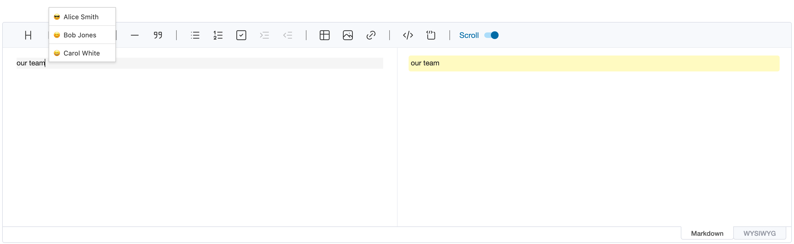
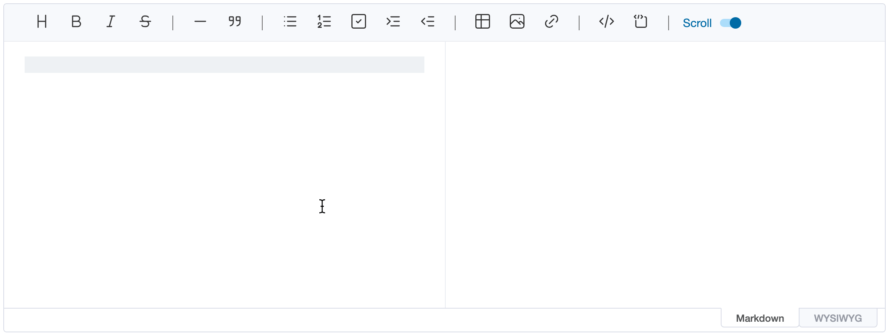
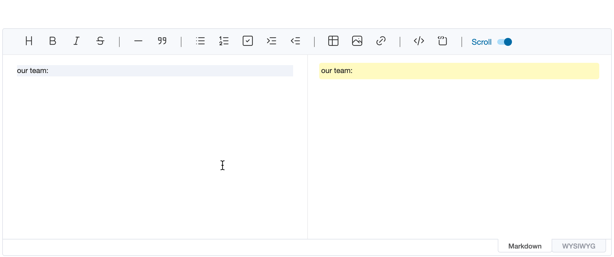

Widgets help with editing content: a popup widget floats a temporary element next to the cursor, such as suggestions
after typing @, and an inline widget shows a piece of markdown as a richer element, such as a mention chip for a
profile link.
When editing content in the editor, you may want to show the suggestion popup at the current cursor position. At this time, the addWidget API can be used to float the DOM node that is desired on the editor. This node does not affect other contents being edited, and is temporarily added. In other words, if you enter text or change focus, it disappears. The API signature is as follows.
addWidget(node: Node, style: WidgetStyle, pos?: EditorPos)
| Parameter | Type | Description |
|---|---|---|
node |
Node | DOM node to be added as widget |
style |
'top' | 'bottom' | Determines whether to add widget above or below the specified position. |
pos |
EditorPos | Set where the widget will be added. This is optional value, if not set, adds widget to the current cursor position. |
const popup = document.createElement('ul')
// ...
editor.addWidget(popup, 'top')
When the above code is executed, a popup node is added as shown below.

If you want to show the widget when typing the specific key, keyup event is useful.
editor.on('keyup', (editorType, ev) => {
if (ev.key === '@') {
const popup = document.createElement('ul')
// ...
editor.addWidget(popup, 'top')
}
})
Popup widgets are temporary. An inline widget is content: text in the markdown that matches one of the widgetRules
is shown as a widget, such as a mention chip for a profile link. The markdown keeps the text itself, so other
renderers (remark, GitHub) show it as ordinary markdown, and getMarkdown() returns it unchanged.
// a profile link: [@joe](https://example.com/users/joe)
const reProfile = /\[@(\w+)\]\(https:\/\/example\.com\/users\/\w+\)/
const editor = new Editor({
el: document.querySelector('#editor'),
widgetRules: [
{
rule: reProfile,
toDOM(text, { interactive }) {
const [, name] = text.match(reProfile)
const chip = document.createElement(interactive ? 'button' : 'span')
chip.className = 'mention'
chip.textContent = `@${name}`
return chip
},
toSource(text) {
const [, name] = text.match(reProfile)
return [
{ from: 1, to: 2 + name.length, className: 'mention-name' },
{ from: 3 + name.length, to: text.length, collapsed: true }
]
}
}
]
})
Each rule has:
rule: the regular expression the widget's markdown text matches. Text in code spans, code blocks and escaped
text (\@joe) doesn't become a widget. When several rules match, the one that matches earliest wins, and the
first rule among those that match at the same place.toDOM(text, { interactive }): the widget's DOM, given the matched text.toSource(text) (optional): how the text looks in the markdown editor.| Where | Widgets |
|---|---|
| WYSIWYG editor | toDOM(text, { interactive: true }): the widget can react to clicks or show controls. It's a single unit that the cursor moves past. |
Markdown preview, Viewer and getHTML() |
toDOM(text, { interactive: false }): the widget as the content will look, without interactive features. |
| Markdown editor | The text itself, as plain, editable markdown, in an element with the uf-md-widget class. |
The Viewer takes the same widgetRules option. Task checkboxes follow the same split: they can be checked in the
WYSIWYG editor, while the preview and the viewer only show them.

The markdown editor always shows the real markdown, so the user keeps full control of it; widgets only help.
toSource(text) returns parts of the matched text, by offsets within it, to style:
className: class names for the part, e.g. to highlight the user name.collapsed: true: hide the part while the cursor is outside the widget, e.g. the URL of a profile link. It shows
again as soon as the cursor enters the widget.A click on a widget's text emits clickWidget with the text, its position in the markdown (start, end) and the
mouse event, for example to offer a picker that replaces the text:
editor.on('clickWidget', ({ start, end }) => {
const picker = createProfilePicker((name) => {
editor.replaceSelection(`[@${name}](https://example.com/users/${name})`, start, end)
})
editor.addWidget(picker, 'bottom', end)
})
In the WYSIWYG editor, typed text becomes a widget once it's complete: when the next character doesn't extend the
match, such as a space after a name. Text inserted with insertText(), replaceSelection() or
replaceWithWidget() becomes a widget right away, which suits inserting a mention picked from a popup widget. In the
markdown editor, where positions are [line, ch]:
ul.addEventListener('mousedown', (ev) => {
const name = ev.target.textContent.trim()
const [start, end] = editor.getSelection()
// keep the focus in the editor
ev.preventDefault()
// replace the typed `@` with the profile link
editor.replaceSelection(`[@${name}](https://example.com/users/${name})`, [start[0], start[1] - 1], end)
})
